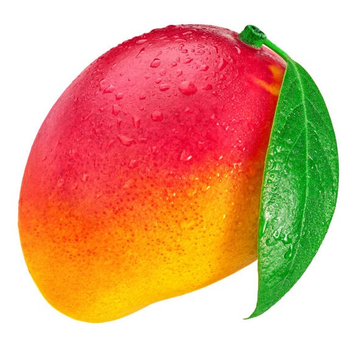

MANGO
Mangifera indica
A mango is an edible stone fruit produced by the tropical tree Mangifera indica. It originated from the region between northwestern Myanmar, Bangladesh, and northeastern India.[1][2] M. indica has been cultivated in South and Southeast Asia since ancient times resulting in two types of modern mango cultivars: the "Indian type" and the "Southeast Asian type".[1][2] Other species in the genus Mangifera also produce edible fruits that are also called "mangoes", the majority of which are found in the Malesian ecoregion.[3]
Worldwide, there are several hundred cultivars of mango. Depending on the cultivar, mango fruit varies in size, shape, sweetness, skin color, and flesh color, which may be pale yellow, gold, green, or orange.[4] Mango is the national fruit of India, Pakistan and the Philippines,[5][6] while the mango tree is the national tree of Bangladesh.[7]
Etymology
The English word mango (plural "mangoes" or "mangos") originated in the 16th century from the Portuguese word manga, from the Malay mangga, and ultimately from the Tamil man ("mango tree") + kay ("unripe fruit/vegetable").[8][9][10] The scientific name, Mangifera indica, refers to a plant bearing mangoes in India.[10]
Description
Mango trees grow to 30–40 metres (98–131 feet) tall, with a crown radius of 10–15 m (33–49 ft). The trees are long-lived, as some specimens still fruit after 300 years.[11]
In deep soil, the taproot descends to a depth of 6 m (20 ft), with profuse, wide-spreading feeder roots and anchor roots penetrating deeply into the soil.[4] The leaves are evergreen, alternate, simple, 15–35 centimetres (6–14 inches) long, and 6–16 cm (2+1⁄2–6+1⁄2 in) broad; when the leaves are young they are orange-pink, rapidly changing to a dark, glossy red, then dark green as they mature.[4] The flowers are produced in terminal panicles 10–40 cm (4–15+1⁄2 in) long; each flower is small and white with five petals 5–10 millimetres (3⁄16–3⁄8 in) long, with a mild, sweet fragrance.[4] Over 500 varieties of mangoes are known,[4] many of which ripen in summer, while some give a double crop.[12] The fruit takes four to five months from flowering to ripening.[4]
The ripe fruit varies according to cultivar in size, shape, color, sweetness, and eating quality.[4] Depending on the cultivar, fruits are variously yellow, orange, red, or green.[4] The fruit has a single flat, oblong pit that can be fibrous or hairy on the surface and does not separate easily from the pulp.[4] The fruits may be somewhat round, oval, or kidney-shaped, ranging from 5–25 centimetres (2–10 in) in length and from 140 grams (5 oz) to 2 kilograms (5 lb) in weight per individual fruit.[4] The skin is leather-like, waxy, smooth, and fragrant, with colors ranging from green to yellow, yellow-orange, yellow-red, or blushed with various shades of red, purple, pink, or yellow when fully ripe.[4]
Ripe intact mangoes give off a distinctive resinous, sweet smell.[4] Inside the pit 1–2 mm (0.039–0.079 in) thick is a thin lining covering a single seed, 4–7 cm (1.6–2.8 in) long. Mangoes have recalcitrant seeds which do not survive freezing and drying.[13] Mango trees grow readily from seeds, with germination success highest when seeds are obtained from mature fruits.[4]
Mangoes originated from the region between northwestern Myanmar, Bangladesh, and northeastern India.[1][2] The mango is considered an evolutionary anachronism, whereby seed dispersal was once accomplished by a now-extinct evolutionary forager, such as a megafauna mammal.[14]
From their center of origin, mangoes diverged into two genetically distinct populations: the subtropical Indian group and the tropical Southeast Asian group. The Indian group is characterized by having monoembryonic fruits, while polyembryonic fruits characterize the Southeast Asian group.[1][2]
 It was previously believed that mangoes originated from a single domestication event in South Asia before being spread to Southeast Asia, but a 2019 study found no evidence of a center of diversity in India. Instead, it identified a higher unique genetic diversity in Southeast Asian cultivars than in Indian cultivars, indicating that mangoes may have originally been domesticated first in Southeast Asia before being introduced to South Asia. However, the authors also cautioned that the diversity in Southeast Asian mangoes might be the result of other reasons (like interspecific hybridization with other Mangifera species native to the Malesian ecoregion). Nevertheless, the existence of two distinct genetic populations also identified by the study indicates that the domestication of the mango is more complex than previously assumed and would at least indicate multiple domestication events in Southeast Asia and South Asia.[1][2]
Cultivars
Main article: List of mango cultivars
There are hundreds of named mango cultivars. In mango orchards, several cultivars are often grown to improve pollination. Many desired cultivars are monoembryonic and must be propagated by grafting, or they do not breed true. A common monoembryonic cultivar is 'Alphonso', an important export product, considered "the king of mangoes."[15]
Cultivars that excel in one climate may fail elsewhere. For example, Indian cultivars such as 'Julie,' a prolific cultivar in Jamaica, require annual fungicide treatments to escape the lethal fungal disease anthracnose in Florida. Asian mangoes are resistant to anthracnose.[16]
The current world market is dominated by the cultivar 'Tommy Atkins', a seedling of 'Haden' that first fruited in 1940 in southern Florida and was initially rejected commercially by Florida researchers.[17] Growers and importers worldwide have embraced the cultivar for its excellent productivity and disease resistance, shelf life, transportability, size, and appealing color.[18] Although the Tommy Atkins cultivar is commercially successful, other cultivars may be preferred by consumers for eating pleasure, such as Alphonso.[15][18]
Generally, ripe mangoes have an orange-yellow or reddish peel and are juicy for eating, while exported fruit are often picked while underripe with green peels. Although producing ethylene while ripening, unripened exported mangoes do not have the same juiciness or flavor as fresh fruit.
It was previously believed that mangoes originated from a single domestication event in South Asia before being spread to Southeast Asia, but a 2019 study found no evidence of a center of diversity in India. Instead, it identified a higher unique genetic diversity in Southeast Asian cultivars than in Indian cultivars, indicating that mangoes may have originally been domesticated first in Southeast Asia before being introduced to South Asia. However, the authors also cautioned that the diversity in Southeast Asian mangoes might be the result of other reasons (like interspecific hybridization with other Mangifera species native to the Malesian ecoregion). Nevertheless, the existence of two distinct genetic populations also identified by the study indicates that the domestication of the mango is more complex than previously assumed and would at least indicate multiple domestication events in Southeast Asia and South Asia.[1][2]
Cultivars
Main article: List of mango cultivars
There are hundreds of named mango cultivars. In mango orchards, several cultivars are often grown to improve pollination. Many desired cultivars are monoembryonic and must be propagated by grafting, or they do not breed true. A common monoembryonic cultivar is 'Alphonso', an important export product, considered "the king of mangoes."[15]
Cultivars that excel in one climate may fail elsewhere. For example, Indian cultivars such as 'Julie,' a prolific cultivar in Jamaica, require annual fungicide treatments to escape the lethal fungal disease anthracnose in Florida. Asian mangoes are resistant to anthracnose.[16]
The current world market is dominated by the cultivar 'Tommy Atkins', a seedling of 'Haden' that first fruited in 1940 in southern Florida and was initially rejected commercially by Florida researchers.[17] Growers and importers worldwide have embraced the cultivar for its excellent productivity and disease resistance, shelf life, transportability, size, and appealing color.[18] Although the Tommy Atkins cultivar is commercially successful, other cultivars may be preferred by consumers for eating pleasure, such as Alphonso.[15][18]
Generally, ripe mangoes have an orange-yellow or reddish peel and are juicy for eating, while exported fruit are often picked while underripe with green peels. Although producing ethylene while ripening, unripened exported mangoes do not have the same juiciness or flavor as fresh fruit.
 Distribution and habitat
Mango tree in Palestine
From tropical Asia, mangoes were introduced to East Africa by Arab and Persian traders in the ninth to tenth centuries.[19] The 14th-century Moroccan traveler Ibn Battuta reported it at Mogadishu.[20] It was spread further into other areas around the world during the Colonial Era. The Portuguese Empire spread the mango from their colony in Goa to East and West Africa. From West Africa, they introduced it to Brazil from the 16th to the 17th centuries. From Brazil, it spread northwards to the Caribbean and eastern Mexico by the mid to late 18th century. The Spanish Empire also introduced mangoes directly from the Philippines to western Mexico via the Manila galleons from at least the 16th century. Mangoes were only introduced to Florida by 1833.[2][21]
Cultivation
The mango is now cultivated in most frost-free tropical and warmer subtropical climates. It is cultivated extensively in South Asia, Southeast Asia, East and West Africa, the tropical and subtropical Americas, and the Caribbean.[22] Mangoes are also grown in Andalusia, Spain (mainly in Málaga province), as its coastal subtropical climate is one of the few places in mainland Europe that permits the growth of tropical plants and fruit trees. The Canary Islands are another notable Spanish producer of the fruit. Other minor cultivators include North America (in South Florida and the California Coachella Valley), Hawai'i, and Australia.[23]
Many commercial cultivars are grafted onto the cold-hardy rootstock of the Gomera-1 mango cultivar, originally from Cuba. Its root system is well adapted to a coastal Mediterranean climate.[24] Many of the 1,000+ mango cultivars are easily cultivated using grafted saplings, ranging from the "turpentine mango" (named for its strong taste of turpentine[25]) to the Bullock's Heart. Dwarf or semidwarf varieties serve as ornamental plants and can be grown in containers. A wide variety of diseases can afflict mangoes.[citation needed]
Mango* production – 2022
Country millions of tonnes
India 26.3
Indonesia 4.1
China 3.8
Pakistan 2.8
Mexico 2.5
Brazil 2.1
World 59.2
* includes mangosteens and guavas reported to FAOSTAT
Source: FAOSTAT of the United Nations[26]
A breakthrough in mango cultivation was the use of potassium nitrate and ethrel to induce flowering in mangoes. The discovery was made by Filipino horticulturist Ramon Barba in 1974 and was developed from the unique traditional method of inducing mango flowering using smoke in the Philippines. It allowed mango plantations to induce regular flowering and fruiting year-round. Previously, mangoes were seasonal because they only flowered every 16 to 18 months. The method is now used in most mango-producing countries.[27][28]
Distribution and habitat
Mango tree in Palestine
From tropical Asia, mangoes were introduced to East Africa by Arab and Persian traders in the ninth to tenth centuries.[19] The 14th-century Moroccan traveler Ibn Battuta reported it at Mogadishu.[20] It was spread further into other areas around the world during the Colonial Era. The Portuguese Empire spread the mango from their colony in Goa to East and West Africa. From West Africa, they introduced it to Brazil from the 16th to the 17th centuries. From Brazil, it spread northwards to the Caribbean and eastern Mexico by the mid to late 18th century. The Spanish Empire also introduced mangoes directly from the Philippines to western Mexico via the Manila galleons from at least the 16th century. Mangoes were only introduced to Florida by 1833.[2][21]
Cultivation
The mango is now cultivated in most frost-free tropical and warmer subtropical climates. It is cultivated extensively in South Asia, Southeast Asia, East and West Africa, the tropical and subtropical Americas, and the Caribbean.[22] Mangoes are also grown in Andalusia, Spain (mainly in Málaga province), as its coastal subtropical climate is one of the few places in mainland Europe that permits the growth of tropical plants and fruit trees. The Canary Islands are another notable Spanish producer of the fruit. Other minor cultivators include North America (in South Florida and the California Coachella Valley), Hawai'i, and Australia.[23]
Many commercial cultivars are grafted onto the cold-hardy rootstock of the Gomera-1 mango cultivar, originally from Cuba. Its root system is well adapted to a coastal Mediterranean climate.[24] Many of the 1,000+ mango cultivars are easily cultivated using grafted saplings, ranging from the "turpentine mango" (named for its strong taste of turpentine[25]) to the Bullock's Heart. Dwarf or semidwarf varieties serve as ornamental plants and can be grown in containers. A wide variety of diseases can afflict mangoes.[citation needed]
Mango* production – 2022
Country millions of tonnes
India 26.3
Indonesia 4.1
China 3.8
Pakistan 2.8
Mexico 2.5
Brazil 2.1
World 59.2
* includes mangosteens and guavas reported to FAOSTAT
Source: FAOSTAT of the United Nations[26]
A breakthrough in mango cultivation was the use of potassium nitrate and ethrel to induce flowering in mangoes. The discovery was made by Filipino horticulturist Ramon Barba in 1974 and was developed from the unique traditional method of inducing mango flowering using smoke in the Philippines. It allowed mango plantations to induce regular flowering and fruiting year-round. Previously, mangoes were seasonal because they only flowered every 16 to 18 months. The method is now used in most mango-producing countries.[27][28]